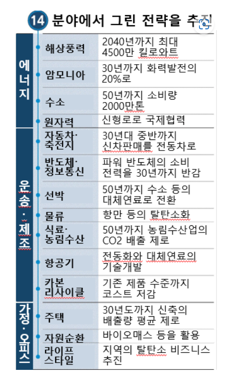

MIT Technology Review
탈탄소화
<각 나라별 정책>
2.일본
“80% 감축(기준년도 미제시)” -> 수소에너지 활용, 에너지 효율성 향상, 탄소자원 기술활용
① 에너지 부문 탈탄소화
원전 사고 이후 원전의존도 감축을 위한 전원다각화 정책을 펼치고 있다. 안전성(Safety)를 전제로 한 안정적 에너지공급(Energy Security), 경제적 효율 향상(Economic Efficiency)을 통한 저비용 에너지공급 실현, 친환경(Environment) 구축 등 ‘3E+S’라는 목표를 내세웠다. 2018년 ‘5차 에너지 기본 계획’에서 재생에너지를 주력 전원화하겠다고 선언하였고, 2030년까지의 전원 개편 목표로 재생에너지 22~24%, 석유 3%, 천연 가스 27% 등을 제시했다.
① 현황
2050년 탈탄소사회의 실현에 대한 정부 계획의 원안이 알려졌다. 해상풍력과 수소 등 14개 중점분야를 설정하고, 전기자동차(EV)는 전체 코스트를 가솔린차 수준을 목표로 한다. 원자력 발전은 소형 신형로의 개발을 추진한다. 정부가 명확히 중장기 목표와 지원책을 제시하고, 민간기업이 투자를 추진하기 쉬운 환경을 정비해 높은 목표의 달성으로 연결한다.

① 주요정책
장기에 걸친 기술의 개발·실증을 2조엔의 기금으로 지원한다. 세계의 ESG자금도 불러들여, 일본의 장래의 소득·고용창출로 연결한다. 규제완화와 국제표준화에 노력한다. 카본 프라이싱 등 경제적 수단에 대해서는 기존 제도의 강화와 대상 확충, 새로운 제도도 포함해 주저 없이 착수한다. 정부가 상한을 정하는 배출량 거래는 배출량의 할당방법 등이 과제이다. 탄소세는, 공평성과 배출억제효과 등의 과제가 있어, 전문적·기술적인 논의가 필요하다.

③ 에너지 부문 탈탄소화
③ 깨끗하고 안전한 에너지 공급을 위해 ‘제8차 전력수급 기본계획’을 수립하였고, 2030년까지 재생에너지 발전비중을 20% 수준으로 확대하는 것을 골자로 한다. 정책목표 달성을 위해서는 2016년 말 대비 발전비중 3배, 설비용량 4배 확대가 필요한 상황이다.
참고문헌1
참고문헌2